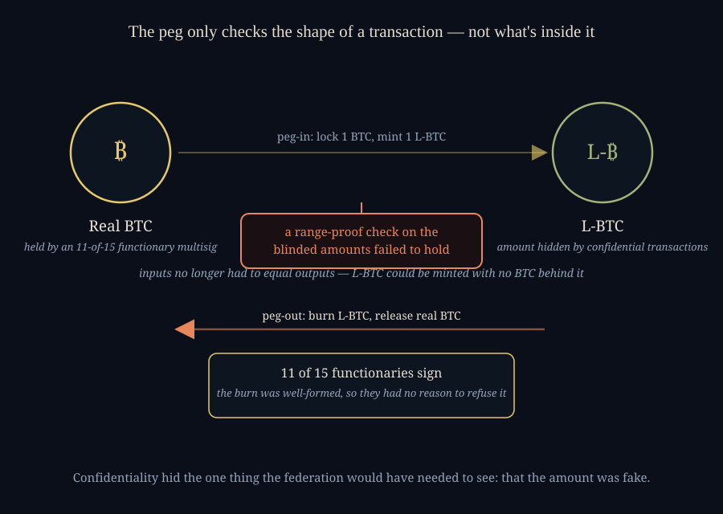

Nearly Four Thousand Bitcoin, and Why I Uninstalled Aqua
SEPTEMBER 6, 2026
Sometime on September 6th, something close to four thousand bitcoin left the wallet that backs Blockstream's Liquid Network — the federation's own reserve fell from roughly 4,200 BTC to about 207 BTC in one move, worth north of three hundred million dollars at the day's price. A follow-up transaction is reported to have carried an on-chain message: "we are whitehats. contact us on chain." Blockstream, as of the day I'm writing this, has not put out a statement confirming what happened, denying it, or naming a cause. I own an Aqua wallet — Blockstream-adjacent, built to hold Lightning and Liquid assets side by side — that I'd installed and never funded. I deleted it this morning. This entry is about why.
What the Peg Is Actually Promising
Liquid is a federated sidechain: send real bitcoin to a multisig address controlled by fifteen companies — called functionaries — and the federation mints you the same amount of L-BTC on a separate, faster-settling chain built for exchanges and traders to move value between each other without waiting on Bitcoin's own confirmations. Send the L-BTC back and burn it, and eleven of those fifteen functionaries sign a transaction releasing your real bitcoin back out. The promise underneath the whole thing is arithmetic: total L-BTC in existence should always equal total BTC locked in the federation's reserve, to the satoshi, forever. That equality is the entire product. It is also, as of this week, apparently not true.

The Feature That May Have Broken It
Liquid's other headline feature, alongside speed, is confidential transactions: amounts and asset types are blinded on-chain by default, so nobody watching the sidechain can see how much L-BTC or which tokenized asset moved in a given transaction — only the parties involved can. That privacy is real cryptography, not obfuscation: a Pedersen commitment hides the number, and a separate range proof is what convinces every validator, without ever revealing the actual amount, that the transaction's hidden inputs and hidden outputs still balance and that nothing negative snuck in to fake a positive elsewhere. Break that proof — not the multisig, not the functionaries' judgment, just the one piece of math that's supposed to make blindness safe — and you can construct a transaction that mints L-BTC out of nothing while every visible property of it still checks out.
That's the read two Bitcoin developers I follow put forward once the mainstream coverage was still calling this a mystery: Lisa Neigut, who works on Lightning (her post here), and Steven Roose, who has worked directly on Liquid's own codebase (his here) — an inflation bug in Liquid's confidential-transactions verification, exploited to mint L-BTC with no bitcoin behind it. I want to be honest about what that is and isn't: it's a specific, technically literate theory from people who know this exact codebase, not a confirmed postmortem — Blockstream hadn't published one as I wrote this, and the mainstream reporting I could find explicitly listed it as one unconfirmed possibility among several. But it's also not a new class of bug being invented for the occasion. Zcash's own team found and quietly patched a comparable flaw in 2019 — a bug in the zero-knowledge proving system behind its original shielded pool that could have let someone counterfeit shielded coins invisibly, fixed in a network upgrade before, as far as anyone can tell, it was ever used. Hiding amounts and proving they're still honest is hard cryptography, done by hand, and this would be at least the second time a real deployment of it has needed exactly this kind of proof to hold when it didn't.
Then the Federation Did Exactly What It Was Built to Do
The part of this that actually changed my mind isn't the bug — bugs happen, in every codebase, including Bitcoin's own history has a couple. It's what happened next: the functionaries reportedly signed the peg-out. Eleven of fifteen companies looked at a transaction burning a large amount of L-BTC and authorized releasing the matching real bitcoin, because that is precisely what a functionary is designed to do with a well-formed burn — verify the shape of the transaction, not audit the private history of every satoshi that ever fed into it. If the amount being burned was never real in the first place, confidentiality is exactly what stopped the one group of people positioned to catch it from seeing that it wasn't. The federation's multisig held. The signing process worked exactly as specified. And several hundred million dollars still walked out, because the number they were all faithfully agreeing to release was fraudulent upstream of anything eleven-of-fifteen human review was ever going to catch.
Why I Actually Liked Liquid Before This
I want to be fair to what Liquid was trying to do, because I was one of the people who liked having it around. Lightning is extraordinary for what it is — instant, cheap, peer-to-peer, secured by Bitcoin's own base layer with no federation anywhere in the picture — but it's also a network of open channels that wants liquidity managed and sometimes wants a faster, chunkier settlement rail sitting next to it for moving size between exchanges or rebalancing a channel without touching mainnet fees. Liquid, sitting right beside it, felt like the sensible complement: two-minute blocks, confidential amounts so a counterparty couldn't see your position, and a federation of real, named, reasonably reputable companies rather than an anonymous validator set. I never fully funded my Aqua wallet, but I kept it installed for exactly that reason — the idea of Lightning for spending and Liquid for moving size felt like a genuinely complete picture.
What stays with me isn't really the dollar figure, which — same as every entry like this one — will be stale by the time anyone reads it, and might even be partly reversed if the on-chain message turns out to be genuine. It's the shape of the failure again: a promise that two numbers will always match, enforced by a piece of math nobody outside a small circle of specialists can really check, and a group of otherwise careful, well-intentioned signers who did their actual job correctly and still couldn't have caught it. Multisig protects you from a dishonest signer. It has never once claimed to protect you from an honest signer looking at a lie.
Update, September 6th: Would Covenants Have Fixed This?
Someone raised this with me directly the same day I posted the above, and it's a fair enough question that it deserves a real answer rather than a reply buried in a thread somewhere: would Bitcoin covenants — the general term for script that constrains what a future transaction spending a given output is allowed to do, the mechanism behind proposals like OP_CTV and the more ambitious designs people build on top of OP_CAT — have prevented this. Mostly, no, and I think it's worth being precise about why, because the honest answer splits into two different problems wearing the same name.
A covenant restricts where a coin can go next. It has nothing to say about whether the amount attached to it was ever honest in the first place. The working theory here is a broken range proof — the specific piece of math that's supposed to prove, without revealing the real numbers, that Liquid's hidden inputs still equal its hidden outputs. A covenant doesn't re-run that proof. It doesn't touch confidential-transaction soundness at all. It's a different primitive, doing a different job, and no amount of constraining a spend's destination catches an amount that was fraudulent before the covenant ever gets to look at it.
Where the instinct isn't wrong is a step to the side of the actual bug: covenants are the building block behind bridge designs — drivechains, and the newer BitVM-style constructions — that let a withdrawal be validated by a math-and-economics challenge game instead of by fifteen companies' signatures. That really would remove the specific failure this week demonstrated, an honest federation correctly approving a transaction it had no way to know was built on a lie. I'd take that trade. But it doesn't fully get you out of the woods either: a covenant-secured bridge still has to correctly interpret whatever the sidechain's own internal accounting says happened, and if that accounting is the thing that's broken — which is exactly what's alleged here — the bridge needs its own independent proof that the sidechain's state is real, not just a script confirming a withdrawal matches what it was told. Building that correctly is the genuinely unsolved part of this whole line of research. Covenants are necessary plumbing for a better answer. They are not, on their own, the fix.